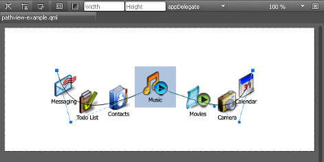

Lists and Other Data Models
Applications typically need to handle and display data that is organized into list or grid views. Models, views, and delegates are used for this purpose. They modularize the visualization of data in order to give you control over the different aspects of the data. For example, you can swap a list view with a grid view with little changes to the data. Similarly, encapsulating an instance of the data in a delegate allows developers to dictate how to present or handle the data.
A model contains the data and its structure. There are several components for creating different types of models. A view is a container that displays the data in a list or a grid, or along a path. A delegate dictates how the data should appear in the view. The delegate takes each piece of data in the model and encapsulates it. The data is then accessible through the delegate.
To visualize data, the view's model property is bound to a model and the delegate property to a component.
For more information, see Models and Views in Qt Quick.
List and Grid Views
Create instances of List View and Grid View components to organize other component instances in list or grid format. They are available in Components > Default Components > Views.
A List View organizes other components as a list, whereas a Grid View organizes them as a grid. By default, components in list and grid views flow vertically from left to right. They are laid out from left to right horizontally, and from top to bottom vertically.
You can change the list view orientation in the Orientation field and the grid view flow in the Flow field. You can change the layout direction in the Layout direction field. By setting values for these properties, you can produce a variety of layouts.
For a list view, you can specify space between list items in the Spacing field. For a grid view, you can specify the width and height of each cell in the W and H fields.
Select the Navigation wraps check box to specify that key navigation wraps around and moves the selection to the next line or cell in the other end of the view when it reaches the end of the view.
Both list and grid views are inherently flickable.
The value of the Snap mode field determines how the view scrolling will settle following a drag or flick. By default, the view stops anywhere within the visible area. If you select SnapToRow, the view settles with a row (or column for a grid view top-to-bottom flow) aligned with the start of the view. If you select SnapOneRow, the view will settle no more than one row or column away from the first visible row at the time the mouse button is released. This option is particularly useful for moving one page at a time.
Delegate Cache
The value of the Cache field determines whether delegates are retained outside the visible area of the view.
If this value is greater than zero, the view may keep as many delegates instantiated as will fit within the cache specified. For example, if in a vertical view the delegate is 20 pixels high, there are three columns and the cache is set to 40, then up to six delegates above and below the visible area may be created or retained. The cached delegates are created asynchronously, allowing creation to occur across multiple frames and reducing the likelihood of skipping frames. To improve painting performance, delegates outside the visible area are not painted.
The default value of this property is platform dependent, but will usually be a value greater than zero. Negative values are ignored.
The cache is not a pixel buffer. It only maintains additional instantiated delegates.
Note: Setting the Cache property is not a replacement for creating efficient delegates. It can improve the smoothness of scrolling behavior at the expense of additional memory usage. The fewer items and bindings in a delegate, the faster a view can be scrolled. It is important to realize that setting a cache will only postpone issues caused by slow-loading delegates, it is not a solution to this problem.
View Highlight
In the List View Highlight and Grid View Highlight sections, you can specify properties for highlighting items in views.
The current item in a list or grid view is higlighted if you set the value of the Range field to ApplyRange or StrictlyEnforceRange. When you select to apply the range, the view attempts to maintain the highlight within the range. However, the highlight can move outside of the range at the ends of the view or due to mouse interaction. When you select to enforce the range, the highlight never moves outside of the range. The current item changes if a keyboard or mouse action would cause the highlight to move outside of the range.
The values of the Preferred begin and Preferred end fields affect the position of the current item when the view is scrolled. For example, if the currently selected item should stay in the middle of the view when it is scrolled, set the begin and end values to the top and bottom coordinates of where the middle item would be. If the current item is changed programmatically, the view will automatically scroll so that the current item is in the middle of the view. The begin value must be less than the end value.
Select the Follows current check box to enable the view to manage the highlight. The highlight is moved smoothly to follow the current item. Otherwise, the highlight is not moved by the view, and any movement must be implemented by the highlight.
The values of the Move duration, Move velocity, Resize duration, and Resize velocity fields control the speed of the move and resize animations for the highlight.
Editing List Models
When you add a Grid View, List View, or Path View, the ListModel and the delegate component that creates an instance for each item in the model are added automatically. For grid and list views, you can edit the list model in Qt Design Studio.
To edit list models:
- Drag-and-drop a Grid View or List View from Components > Default Components > Views to the Navigator or 2D view.
- Right-click the view in Navigator, and select Edit List Model in the context-menu to open the list model editor:
- Double-click the column headings and cells to change their values.
- Use the toolbar buttons to add, remove, or move rows and columns. In a list, each column represents a property and each row adds a list item.
You can replace the default model and delegate with other, more complex models and delegates in the Code view. Item Delegate and Swipe Delegate components are also available in Components > Qt Quick Controls.
Path View
A Path View component lays out data provided by data models on a Path.
A graphical spline editor enables you to specify path view paths, which is a non-trivial task to do in the Code view.

To start editing the path, double-click the path view in the 2D view. The editor composes the path of PathCubic path objects. They are cubic Bezier curves to a given position with two control points. Drag and drop the control points in the 2D view to construct the curve.
In addition, PathLine and PathQuad path objects are supported indirectly. To make a curve segment linear, select Make Curve Segment Straight in the context menu.
By default, the path is closed, which means that its start and end points are identical. To create separate start and end points for it, right-click an edit point to open a context menu, and deselect Closed Path.
To add intermediary points to a curve segment, select Split Segment in the context menu.
In the Path View section, you can specify other properties for the path view. The value of the Drag margin field specifies the maximum distance from the path that initiates mouse dragging.
Select the Interactive check box to make an item flickable. The value of the Flick deceleration field specifies the rate at which a flick will decelerate.
In the Offset field, specify how far along the path the items are from their initial positions. This is a real number that ranges from 0 to the value of the Item count field, which displays the number of items in the model.
In the Path View Highlight section, you can specify properties for highlighting path objects.
Note: You can also use the SVG Path Item Studio Component to specify an SVG path data string that draws a path.
SVG Path Item
The SVG Path Item component uses an SVG path data string to draw a path as a line.
Setting path colors is described in Picking Colors.
The stroke property values that specify the appearance of the path are described in Strokes.

The Path data field in the Path Info section contains the SVG path data string that specifies the path. For more information, see W3C SVG Path Data.
Summary of Model Components
The following table lists the components that you can use to add data models to UIs. The Location column indicates the location of the component in Components. The MCU column indicates which components are supported on MCUs.
| Icon | Name | Location | MCU | Purpose |
|---|---|---|---|---|
| Grid View | Default Components - Views | A grid vizualization of a model. | ||
| Item Delegate | Qt Quick Controls | A standard view item that can be used as a delegate in various views and controls, such as ListView and ComboBox. | ||
| List View | Default Components - Views |  | A list vizualization of a model. | |
 | Path View | Default Components - Views | Vizualizes the contents of a model along a path. | |
| Scroll View | Qt Quick Controls | Provides scrolling for user-defined content. It can be used instead of a Flickable component. | ||
| Stack View | Qt Quick Controls | A stack-based navigation model. | ||
 | SVG Path Item | Qt Quick Studio Components | An SVG path data string that is used to draw a path as a line. | |
| Swipe Delegate | Qt Quick Controls | A view item that can be swiped left or right to expose more options or information. It is used as a delegate in views such as ListView. | ||
| Swipe View | Qt Quick Controls | | Enables users to navigate pages by swiping sideways. |